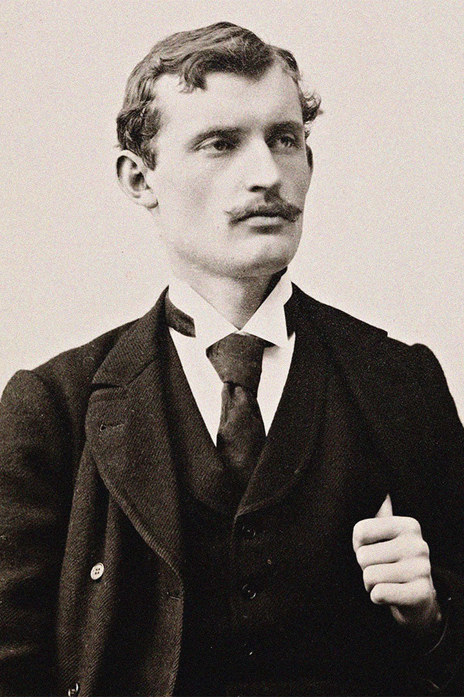
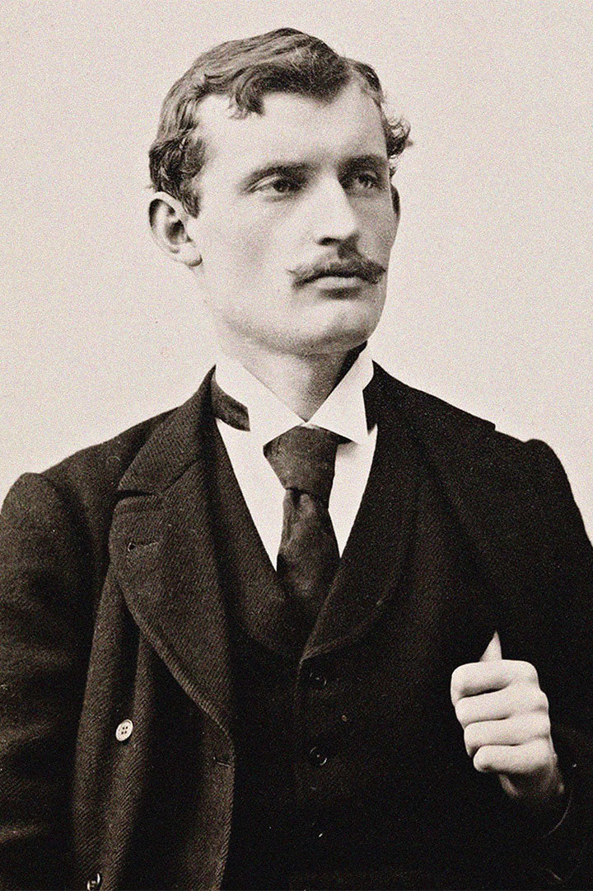
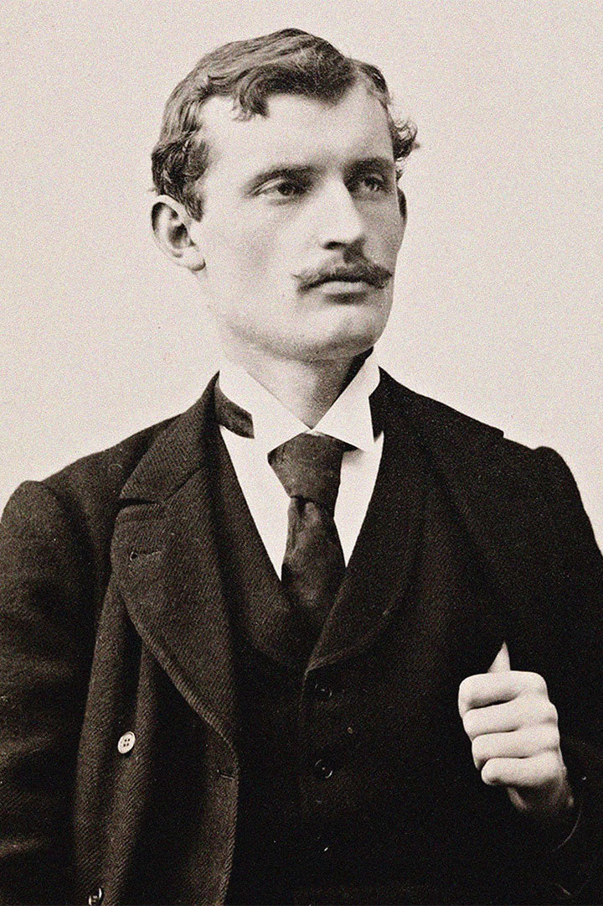
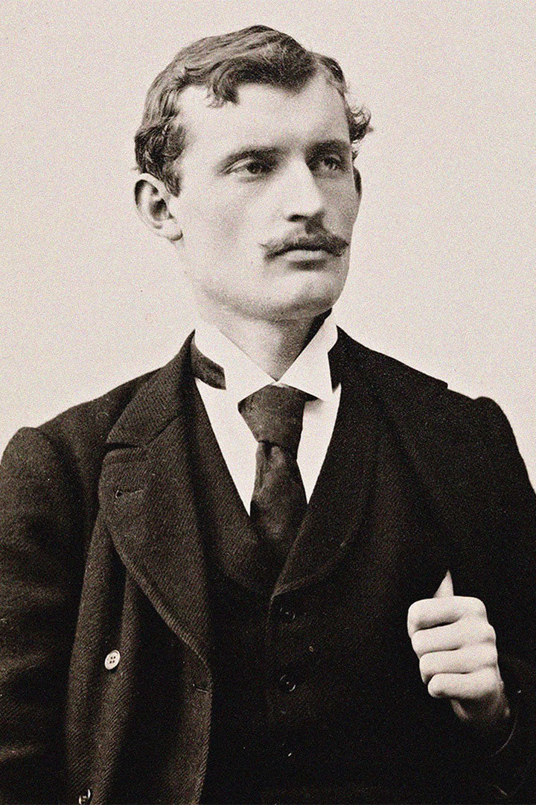

.png) 



Autor: Edvard Munch
Data: 1893
Técnica: Óleo sobre tela, Têmpera e Pastel sobre cartão
Dimensões: 91 x 73,5 centímetros
Localização: Galeria Nacional de Oslo, Noruega
O Grito é um quadro que exibe uma pessoa que olha aterrorizada para o espectador. O cenário é uma ponte, e há outras duas pessoas que caminham sem notar o desespero da personagem principal, que é mostrada com traços ondulados e sombrios. A figura não tem feições masculinas nem femininas e representa qualquer ser humano. Especula-se que essa obra seja um autorretrato do artista com sua vida emocional bastante atordoada. Em 1892, Munch registrou em seu diário o que seria o impulso para a produção da obra. Caminhava com dois amigos pelo passeio, o sol se punha, o céu se tornou repentinamente vermelho, eu me detive; cansado, apoiei-me na grade - sobre a cidade e o braço de mar azul-escuro via apenas sangue e línguas de fogo - meus amigos continuaram a andar e eu permanecia preso no mesmo lugar, tremendo de medo - e sentia que uma gritaria infinda penetrava toda a natureza. Nessa tela, Munch nos apresenta um ser rodeado de medo e ansiedade. A figura quase se funde à paisagem, mas distancia-se dos vultos que aparecem ao fundo. As cores escolhidas são vibrantes; entretanto, a sensação que fica é de extrema tristeza.